Caso 011 · Gruppo Vid'A (Gulino; Albanese) · 2021 · productivo (bodega)
La sala de crianza es una barra de tapial semienterrada en la cumbre de la colina. Su cubierta es una losa plana a la cota +5,00 que prolonga el terreno de la cima: se camina sobre la sala sin notar el cambio de nivel. Al este, la barra se corta con una caja de hormigón visto de dos plantas (recepción, tienda, cata y reuniones) que se asoma al paisaje con huecos profundos. La barra aprovecha la inercia térmica del terreno y la tierra; la caja aprovecha las vistas. Se recoge así el boceto: un plano horizontal largo sobre un zócalo con perforaciones, y marcos más altos a la derecha.
Diseño de forma independiente.
Lectura literal. Las líneas son muros y volúmenes: una barra baja larga con cubierta plana volada, un zócalo de piedra con perforaciones puntuales y dos o tres marcos verticales más altos al final, sobre una colina. Lectura diagramática. El plano horizontal es una cota (la cumbre vuelve a ser plano); los trazos verticales bajo él son luz que entra por rendijas; los puntos son aire y barricas (ventilación y contenido); los marcos son miradores. Se lee como una sección: tierra abajo, plano en medio, vistas arriba.
| Criterio | P1 Barra semienterrada (elegido) | P2 Cámara hundida bajo la cumbre | P3 Tres pabellones escalonados |
|---|---|---|---|
| Lectura | literal + diagramática | diagramática: la crianza se excava, solo emergen un plano y pozos de luz | diagramática: cuestiona la pieza única (piezas desiguales, giradas 20º) |
| Variables que cambia | barra E-O, ocupación lineal, accesos por dos cotas | ocupación bajo tierra, acceso por rampa, sección hundida | tres piezas, geometría girada, desniveles |
| Programa 390-650 m² | 576 m² construidos | 600 m², pero con patio central | 560 m² con más fachada |
| Clima / inercia | muy buena (norte enterrado, tapial) | óptima, pero humedad y riesgo de condensación | mala: tres envolventes expuestas |
| Vistas y acceso | vistas al sur; llegada por la bodega (0,00) y por la cumbre (+5,00) | vistas casi nulas; rampa | buenas vistas; recorridos largos entre piezas |
| Normativa (acces./evac.) | cumple: ascensor, salidas en cota | ajustado (partido_2_ajustado.png): rampa del 12 % a 6 % en 66 m y excavación de 5 m a 4 m. Evacuación y accesibilidad resueltas | piezas a distintas cotas: tres itinerarios accesibles |
| Motivo de descarte | — | tras ajustar siguen 3 900 m³ de desmonte (frente a 1 900) y se pierde el horizonte, que el encargo valora | pérdida de compacidad y de inercia: la fachada crece cerca de un 40 % |
Elijo el P1 por inercia térmica, vistas y menor movimiento de tierras. Las ventajas concretas sobre el P3 son compacidad y un solo recorrido; sobre el P2, el horizonte y el coste.
Envolvente (dos estrategias). A, maciza y profunda (elegida): tapial de tierra local de 60 cm, con paneles de tubos cerámicos Ø110, y hormigón visto de 25 cm con aislante y huecos retranqueados bajo un alero de 1,0 m. Hueco en la barra: 12 %; en la caja: 35 %. B, ligera: lamas verticales de madera sobre muro cortina, con 70 % de hueco y 15 cm de profundidad. Elijo A porque el sur recibe sol alto de verano y la sala necesita 14-16 °C estables. Un hueco en un paño no basta, hace falta masa y profundidad: el alero de 1,0 m sombrea el vidrio con el sol a 72º y deja entrar el sol bajo de invierno. No hay vecinos con los que dialogar, pero sí la tierra del lugar. La lámina B se descarta porque dejaría pasar el calor y no tendría inercia.
Planta baja (±0,00, 432 m²): sala de crianza 24 x 12 m con tres filas de racks de tres alturas (396 barricas de 225 l, 89 m³), zona de carga con portón de 3,2 m, trasiego y tanques; en la caja, recepción, tienda-catas, distribución, escalera con ascensor y dos aseos. Planta primera (+5,00, 144 m²): sala de catas con balcón al sur, sala de reuniones, distribución, núcleo y aseos; la terraza-mirador de 288 m² sobre la sala conecta a nivel con el camino de la cumbre. La carga del vino entra por el sur (cota 0,00); los visitantes pueden llegar por abajo o por arriba. Preexistencias: las instalaciones de la bodega, a cotas más bajas, se conservan íntegras y no se demuele nada; se dibujan en gris #8a8a8a en U01. Todo lo construido es obra nueva.
| Exigido | Propuesto | Cumple / desviación |
|---|---|---|
| Plantas (cada nivel) | P01 baja, P02 primera, P03 cubiertas | Cumple |
| Secciones (2) | S01 (A-A', C-C'), S02 (B-B', D-D') | Cumple (4 cortes) |
| Alzados | S03 sur y norte, S04 este y oeste | Cumple |
| Detalle constructivo | D01 a 1:20 (cimentación a cubierta) | Cumple |
| Situación | U01 a 1:500 | Cumple |
| Sala de crianza (uso principal, nº y m² a definir) | 1 sala de 257,4 m² (396 barricas) | Cumple |
| Espacio de acceso/recepción | 1 recepción de 37,6 m² | Cumple |
| Visitantes: tienda-catas | 1 de 36,7 m² | Cumple |
| Visitantes: sala de catas (alta) | 1 de 43,2 m² | Cumple |
| Sala de reuniones | 1 de 30,1 m² | Cumple |
| Servicios: aseo adaptado y aseo | 2 (aseo adaptado 5,8 m²; aseo 5,6 m²) en cada planta | Cumple |
| Distribución | 2 de 21,2 y 20,9 m² | Cumple |
| Escalera y ascensor | 1 núcleo de 17,3 m² (PB) y 16,9 m² (P1) | Cumple |
| Superficie construida 390-650 m² | 576 m² (432 + 144); útil 504 m² | Cumple |
| Suelo rural, altura y retranqueo genéricos | 2 plantas, +8,90 m; parcela supuesta de 6 700 m² con retranqueos de más de 25 m | Cumple |
| Topografía: cumbre con pendiente | terraza +5,00 enrasada con la cima; movimiento de tierras compensado | Cumple |
| Vistas abiertas, viento y sol | huecos al sur con alero, norte ciego | Cumple |
Desviaciones: ninguna. El programa no lo fija el encargo; los usos complementarios se justifican por la recepción de visitantes que cita el encargo.
Retícula de 6 x 6 m (ejes 1-7 y A-C). Losa maciza de HA-30 de 30 cm (L/20) en forjado +5,00 y cubierta. Pilares de 40 x 40 (carga de unos 600 kN) sobre zapatas de 1,8 x 1,8 x 0,5 m (σ = 150 kPa). Muro de tapial de 60 cm como muro portante de la losa (σ ≈ 0,08 MPa frente a 2 MPa de resistencia), con zócalo de HA de 60 cm hasta +0,50 m y apoyo sobre neopreno; zunchos sobre el portón y las rendijas. Muro de contención norte de HA de 40 cm, apuntalado por el forjado, con zapata de 2,2 m. Caja de hormigón visto de 25 cm con aislante. El voladizo de 1,2 m (L/8: canto 30 cm) apoya en la losa.
Detalle D01: tapial de tierra estabilizada con cal (60 cm, sin aislante), tubos cerámicos de ventilación, zócalo y zapata corrida, solera pulida sobre grava drenante, cubierta transitable invertida (grava, XPS 8 cm, EPDM, formación de pendientes). En la caja: HA 25 + XPS 8 + trasdosado de yeso, carpintería de acero con vidrio 6+12+6 bajo emisivo, retranqueada 15 cm, cubierta con XPS 12 cm.
Sala de crianza: 14-16 °C y 70-80 % de humedad relativa con estrategia pasiva. El norte está enterrado y la tapia y la losa dan masa. Los paneles de tubos del sur (3 x 70 uds., unos 2 m² libres) y las rendijas altas hacen ventilación cruzada nocturna. Un pozo provenzal de tubos enterrados refresca el aire. La cubierta transitable lleva aislante y grava, y el alero sombrea el sur en verano. La caja tiene huecos protegidos por el alero, con sol de invierno por el sur.
Agua: acometida desde la bodega existente; depósito de pluviales de 60 m³ (riego y limpieza de barricas); saneamiento por fosa o conexión a la depuración existente. Climatización de la caja: aerotermia de 20 kW, suelo radiante en planta baja y fancoils en la alta, con ventilación mecánica y recuperador. Sala de crianza: humidificación por nebulización controlada. Energía: campo fotovoltaico de 18 módulos (~6 kWp) en la cubierta del pabellón, cuadro eléctrico en la zona de distribución y alumbrado LED de baja temperatura de color.
Entrada a cota 0,00 sin escalones; puertas de 0,9 a 1,8 m; ascensor de 1,1 x 1,4 m; aseo adaptado con giro de Ø1,5 m; itinerario accesible a todas las estancias, incluida la terraza. Evacuación de la sala (ocupación baja, unas 7 personas): 3 salidas (portón de 3,2 m, puerta de 1,2 m al exterior, doble puerta de 1,8 m a recepción) y recorrido máximo de 24 m. Planta alta (ocupación ~45 personas): escalera de 1,0 m y salida a nivel por la terraza hacia la cima (+5,00).
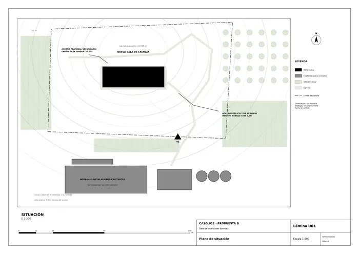
U01 · Sala de crianza en barricas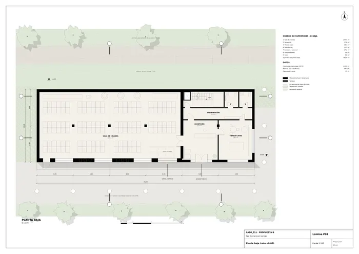
P01 · Sala de crianza en barricas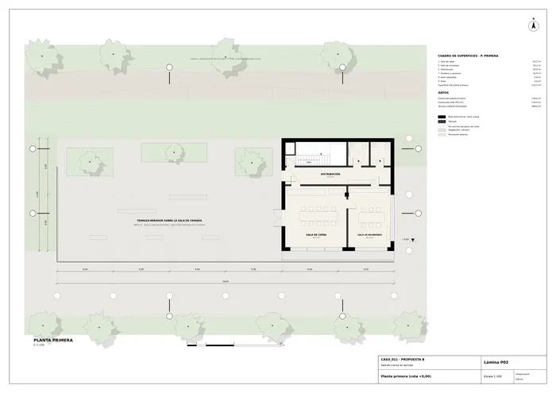
P02 · Sala de crianza en barricas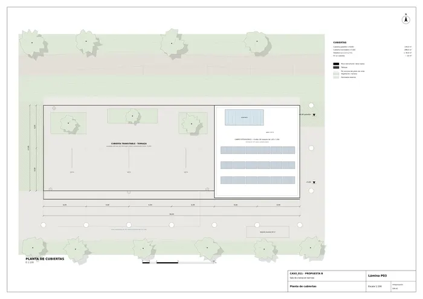
P03 · Sala de crianza en barricas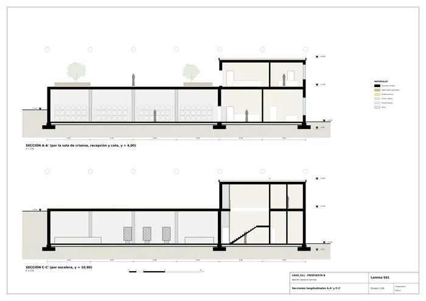
S01 · Sala de crianza en barricas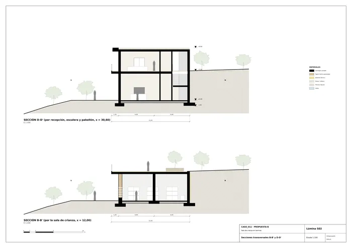
S02 · Sala de crianza en barricas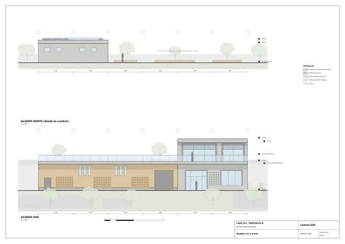
S03 · Sala de crianza en barricas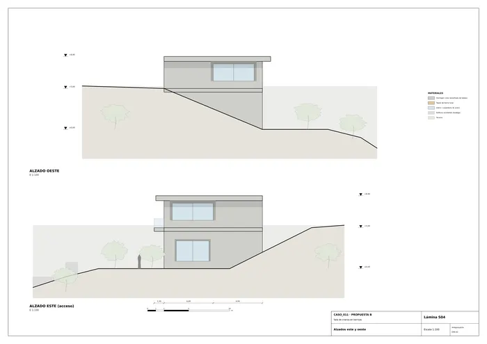
S04 · Sala de crianza en barricas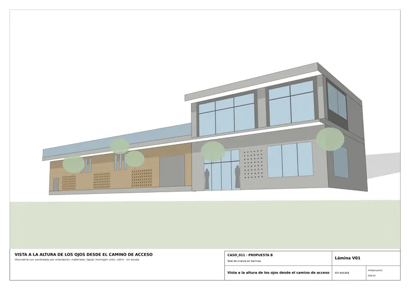
V01 · Sala de crianza en barricas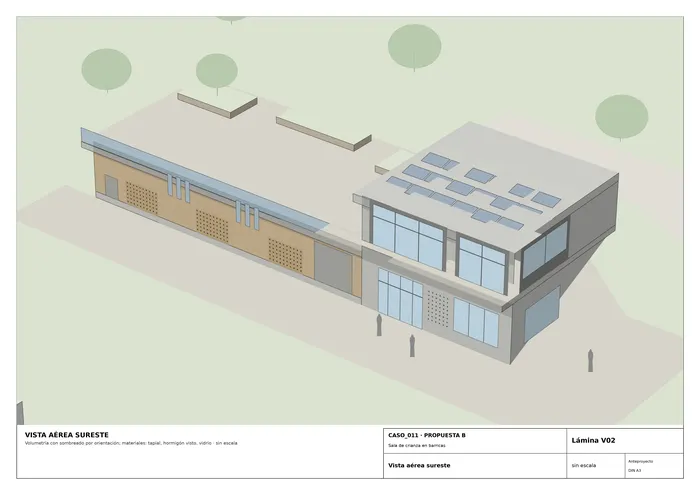
V02 · Sala de crianza en barricas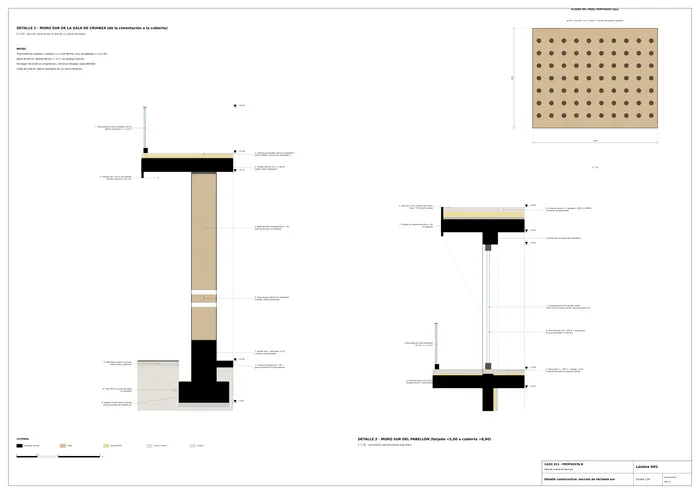
D01 · Sala de crianza en barricasMemoria de la propuesta tal como la entregó el sistema. Se han omitido las notas internas del proceso (revisiones, control de reconocimiento y referencias a archivos de trabajo).